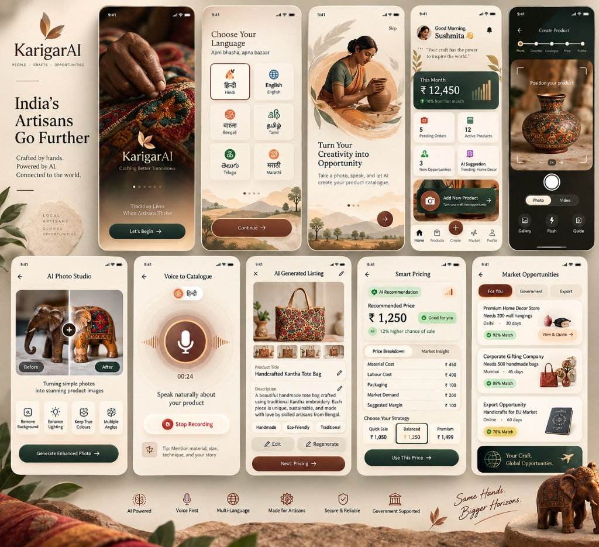

Crafted by hands. Powered by AI. Connected to the world.
Transforming India's 7M+ traditional artisans into digital entrepreneurs through voice-first catalogue generation and fair market linkage.
Our rich cultural heritage faces the constant threat of decay and marginalization. Over 7 Million Indian artisans possess extraordinary ancestral craft, yet remain constrained by digital barriers, opaque middlemen, and underpriced labor.
We introduce Karigar Setu — an AI-powered enterprise manager empowering rural craftspeople with voice-first cataloging, studio photo enhancement, and fair pricing algorithms, truly "bringing authentic Indian craftsmanship to the world forever."
Engineered specifically for rural artisans with zero digital literacy. Voice-first, visual-first, and fully offline-resilient.
Artisan takes a quick photo on any low-cost phone with on-screen framing guides and lighting tips.
Computer vision auto-removes cluttered background, restores authentic texture, and creates 4K studio lighting.
Artisan speaks naturally in Hindi, Bengali, Tamil, or Marathi. AI extracts craft type, material, and weave story.
Fair Pricing Engine calculates material cost + labor hours + live market demand to protect artisan wages.
Instant buyer matching for B2B corporate gifting, export orders, and government procurement (GeM & ONDC).
Karigar Setu is not just another e-commerce platform. It is a compassionate virtual business manager celebrating each artisan's authentic story. Every interaction is supported with voice prompts, large tactile touch targets, and culturally resonant visual metaphors.

Aligning technological innovation with India's vision of inclusive economic growth, digital equity, and preserving timeless craft legacies.
Artisans typically retain only 15-20% of their product's retail value. Karigar Setu connects them directly to institutional and export buyers, increasing take-home margins to over 75%.
Illiteracy should never be an obstacle to digital commerce. By replacing typed forms with conversational voice prompts in native mother tongues, any artisan can build a storefront in 90 seconds.
Every product listing carries a verified artisan card and geo-tagged heritage story. Conscious global consumers connect directly with the maker, preserving ancestral traditions for generations to come.